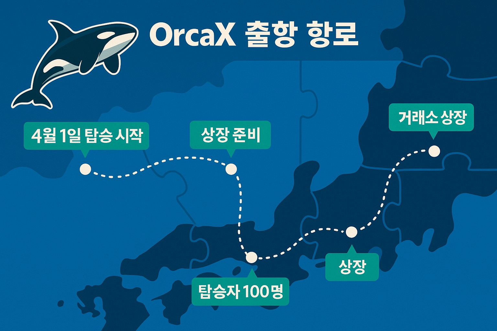

항해의 시작
수평선 너머의 별을 따라, 범고래가 바다를 가르다.
바다는 늘 말이 없습니다.
하지만 그 침묵 속엔 무수한 이야기가 출렁이고 있습니다.
OrcaX, 그 이름은 단순한 토큰을 넘어 새로운 항로를 여는 나침반입니다.
이 첫 번째 퍼즐 조각은
탑승자에게 “우리의 여정이 이제 막 시작되었음을 알리는 별”과도 같은 신호탄입니다.


수평선 너머의 별을 따라, 범고래가 바다를 가르다.
바다는 늘 말이 없습니다.
하지만 그 침묵 속엔 무수한 이야기가 출렁이고 있습니다.
OrcaX, 그 이름은 단순한 토큰을 넘어 새로운 항로를 여는 나침반입니다.
이 첫 번째 퍼즐 조각은
탑승자에게 “우리의 여정이 이제 막 시작되었음을 알리는 별”과도 같은 신호탄입니다.

| 퍼즐 조각 | 테마 | 스토리 내용 |
|---|---|---|
| 1번 | 항해의 시작 | "수평선 너머의 별을 따라, 범고래가 바다를 가르다" |
| 2번 | 기술과 혁신 | "오르카의 지느러미는 혁신의 물결을 읽는다" |
| 3번 | 무한 가능성 | "X는 미지의 가능성, 선택은 당신의 몫" |
| 4번 | 나침반 | "바람이 불지 않아도, OrcaX는 방향을 안다" |
| 5번 | 미지로의 모험 | "알 수 없는 바다는 늘 가장 위대한 보물을 감춘다" |
| 6번 | 여정의 동반자 | "당신의 선택이 OrcaX를 항해시킨다" |
| 7번 | 바다를 가로지르다 | "조류를 넘어선 바람, 그것이 OrcaX의 길" |
| 8번 | 위대한 꿈 | "탑승자 100명, 그들은 전설의 첫 페이지를 열었다" |
| 9번 | 미래 탐색 | "한 발 한 발, 파도를 딛고 미래로" |
| 10번 | 불확실한 희망 | "거친 물살 속에서 희망은 더욱 선명해진다" |
| 11번 | 항해의 목적 | "목적지는 숫자가 아닌 가치에 있다" |
| 12번 | 공동체의 힘 | "혼자가 아닌 함께이기에 우리는 멀리 간다" |
| 13번 | 시장을 향해 | "세상이 OrcaX를 주목하는 그 순간까지" |
| 14번 | 현실의 연결 | "RWA, 토큰이 세상과 닿는 순간" |
| 15번 | 전환점 | "이 퍼즐은 끝이 아닌 새로운 시작의 열쇠" |
| 16번 | 전설의 완성 | "전설은 그렇게 퍼즐 하나로 기억된다" |